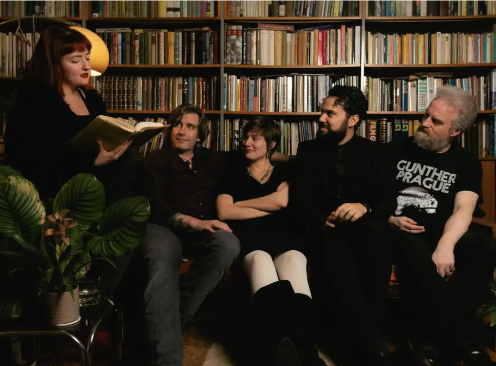
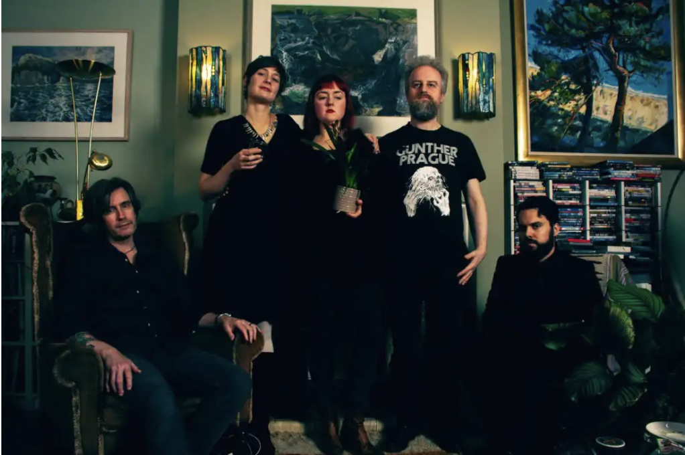
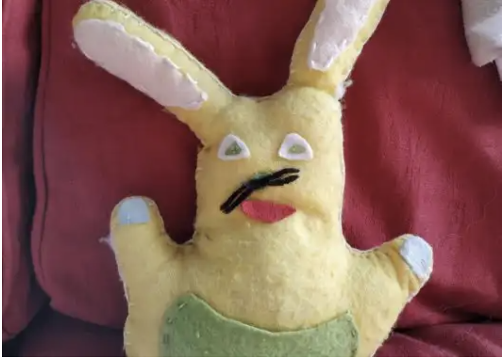

October 9th, 2019
A long time ago, in a world much-changed from the one we call home, there used to be collectives of ‘musicians’s called ‘ ‘band’’. Hard as it is to believe, these ‘bands’ used to regularly make collections of their own songs and release them all together, sometimes even on a circular piece of polycarbonate, or a CD to revert to archaicisms.>
These so-called albums would then be available to the general public for a small fee, something in the region of £8.99, the sum total of which would help the b ‘band’ to eat and pay rent. It was a strange world that nobody understands any more, as we all know that ‘music’ is free and ‘musicians’s work double shifts in the kitchen at Nando’s to stay alive. With this ns mind, itinerant folk ‘musicians’, potwash and historian, Louis Rive, sat down with Sophie Dodds, lead singer of ‘Storm the Palace’ who, in an act of throwback decadence, have just released a new album, ‘Delicious Monster’
LR: You guys are a ‘band’ From one ‘musicians’ to another, do you share out the inherent sense of hopelessness that plagues modern ‘music’,or is one member in particular tasked with dealing with the existentialist dread? How do you delegate?
SD: I think sharing this out is the main reason for being in a ‘band’! You can be your own cosy bubble against the indifference of the world. At least that’s the theory. How do you cope with it as a solo artist? I’m probably more prone to it than the rest of the ‘band’ though. Willa jokes that all my songs are about existential crisis, and I tell her that’s not fair because essentially all songs full stop are about existential crisis. Wouldn’t you agree?
LR: Yes and no. Certainly the pretentious, cerebral folk ‘music’ that I put out is supposed to expose my florid soul and get people thinking about the changing world around them, each story crafted to appeal to the alienated masses that walk the earth, while at the same time exposing the faults of governments and public institutions. Then again, ‘Despacito‘ was just about shagging, so I guess I kind of agree. Anyway, let’s talk Edinburgh. People keep telling me to move back, ostensibly to play ‘music’, but I think surreptitiously to begin a life of Calvinistic working misery. What’s your take on the place?
Storm the Palace. Photos by Greg Ryan
SD: It’s a very small town. I used to complain about how I missed the anonymity of London (where I lived until 3 years ago), but then I realised this was a bit ridiculous given that I had acquired myself the two most recognisable dogs in the city. Living here is like being back at school – there are cliques and crowds and constant politics and everyone’s got a nickname. And this is as true of the ‘music’ scene as anything else. Some people thrive on that however – are you one of those people?
(Louis vehemently shakes head)
I will say that for such a small town it does hold an amazing wealth of talented ‘musicians’s. Unfortunately the same cannot be said for venues or audiences. If you want a city with a properly vibrant scene then move to Glasgow. And as for Calvinist working misery, well I fear that is unavoidable wherever you are these days. It just depends if you want to be a slave in the sunshine or the dark and driving rain. Also, as lovely as it would be to have you back here, I wouldn’t advise anyone to move back to the UK until after No Deal Brexit has well and truly bitten the dust.
So what’s the Barcelona scene like? Is it an inspiring place to write?
LR: I mean most of my songs are about people, pub personalities in particular. Alliteration aside, there’s a good mix of characters here and a bunch of the same societal ills that plague most places. Therefore, from a folk perspective you couldn’t complain too much. There are a lot of ‘musicians’s of varying calibre, though the cliquey nature of Edinburgh where you have to wait over a year to play in the same place twice doesn’t seem to exist. That said I am worried that a lot of the references in my tunes are lost on the audience sometimes. I can’t expect the Catalan fans to know about the King’s Arms in Tollcross and the word jakey doesn’t have an equivalent here. Lyrics are quite important to me as I’m a bit shit at guitar basically.
Photos by Greg Ryan
Anyhow, question time. I wrote a tune about Edinburgh called Mulberry Mews, which doesn’t exist as a street but does rhyme with a bunch of other words. What do you think about lyrics? Is the plant’s name really Clive or did it conveniently rhyme with thrive and alive?
SD: What rhymes with Mulberry?
LR: All the other berries.
SD: Is the song about bushes then?
LR: It’s me that’s asking you about plants Sophie…
SD: Yes, the plant’s name has been Clive ever since I got him. At that time in my life (my early 20s) I named a lot of things Clive. There is also Clive the plastic owl with real feathers, and Clive the hand-made slightly disturbing Finnish rabbit toy. I wondered if the multiple thrived/survived/life rhymes were a bit cheesy, but then it’s a song about a cheese plant so that would at least be conceptually consistent. I guess they’re the kind of lyrics most songwriters would use as a place-holder before coming up with something more universal and generic. Apparently the Beatles song ‘Yesterday’ was originally about bacon and eggs, but obviously McCartney decided to change the words to something more commercially viable. Thankfully commercial viability isn’t something I need to worry about. And for me, at least, I still find the lyrics quite meaningful as they are.
Clive, the hand-made, slightly disturbing Finnish rabbit toy
So, I need to ask you the old chestnut: ‘what is your method’? Do you start with the lyrics? Where do your ideas for melodies come from? Describe your average song-writing situation.
LR: Chesnuts, cheese plants and mulberries? This is quite the botanical interview! (silence and muffled coughing). Well, I write words all the time. Ever since I was a kid I have been quite interested in words. It first manifested itself in some cringeworthy, teenage poetical attempts which will hopefully never come to public attention unless I become world famous and release them as a money-spinner after a difficult third album. You know, ‘black hole/ soul/ alone’ kind of pish. We will see. As I previously mentioned, I am pretty limited by my guitar playing ability, I can do all the chords but that’s about it. So the words come first, I think Shane MacGowan and the Black Francis of the Pixies would be as close to inspirations as possible. The melodies are pretty simple, nursery rhyme chords mainly. I think people do too much stupid stuff with melodies because there is a misconception that complex is always better. Not so.
SD: So much for my smugness about being able to write songs in 5/4 or with chords that are both major and minor.
LR: Smug is wearing lycra, having a beard and playing the flute on one leg. Up to you guys really. I won’t throw any chestnuts your way, but I will finish on this note. What do you want to do with the album?
SD: It’s funny isn’t it? People always think of an album release as the beginning of a process, whereas from an artistic point of view it’s actually the end. Essentially I have now done everything with this album that I wanted to do with it: write it, record it, release it, and we’ve already broken even thanks to our lovely supporters and their pre-orders. It would be nice to sell the remaining copies I guess. And get one or two more reviews or radio plays. For our first album I went all-out – invested loads of money in PR and planned a 10 day tour of the UK and Ireland. And I was both broke and broken afterward. This album has been all about keeping the expectations low and just trying to enjoy making it. And that’s what’s made it a better album I think, or at least one that I’m personally much happier with. It would be disingenuous to say that I wouldn’t be delighted if some fat cat in a suit flew in and offered me a 5 album deal in exchange for my soul. But that kinda thing barely happens any more. It’s a 20th century dream that we’re all failing to shirk from our shoulders. I get so fed up with how people who don’t know anything about the ‘music’ industry always say things like “we’ll see you on Top of the Pops” when you tell them you’re in a ‘band’. I know they’re just being friendly but it undermines everything I’ve already accomplished. Last time someone said “remember us when you’re famous” I responded with “remember me when I’m down and destitute because I’ve sunk all my energy and time and money into ‘music’”.
Does that sound like an appropriately cheerful note to wrap up on?
LR: (sighs) Yeah why not.